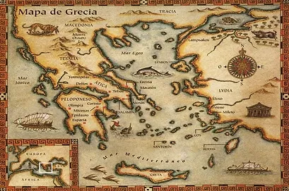

EDAD GRIEGA
¿Dónde se encuentra ubicado?
La civilización griega se desarrolló en el extremo noreste del Mar Mediterráneo, en los territorios que hoy ocupa Grecia, Asia Menor (Turquía), y en varias islas como Creta, Chipre, Rodas, y Sicilia (Italia).
Economía Griega
La economía de la Antigua Grecia se caracterizaba por la gran importancia de la agricultura, acrecentada todavía más por la pobreza relativa de los campos de cultivo de la geografía de Grecia. A comienzos del siglo VI a. C., se desarrolló la artesanía y el comercio (principalmente marítimo), que fueron cada vez más importantes en el periodo clásico.
Organización social y política
La sociedad griega era esclavista, por lo tanto, era muy desigual. La componían dos grupos de personas: los libres y los esclavos. Los libres no pertenecían a nadie, y podían ser propietarios de esclavos, en función de su riqueza. Se dividían en dos categorías: Ciudadanos: poseían derechos políticos, por lo que podían votar y elegir cargos públicos, así como ser elegidos ellos mismos como tales. En la polis de Atenas se consideraba ciudadanos a los hijos de padre y madre atenienses. Pagaban impuestos y tenían la obligación de servir en el ejército. Muchos de ellos eran agricultores o comerciantes. Constituían una minoría. Se estima que en el siglo V a. C., de los 400.000 habitantes que poseía Atenas, sólo eran ciudadanos unos 40.000.
No ciudadanos: en Atenas recibían el nombre de "metecos" y eran emigrantes residentes en la ciudad. En Esparta se llamaban "periecos". Eran hombres y mujeres libres, pero carecían de derechos políticos y no podían ostentar cargos públicos. Normalmente se dedicaban a la artesanía y al comercio. Algunos de ellos llegaron a ostentar grandes fortunas.
Religión
Los griegos creían en muchos dioses, su religión era politeísta. Sus divinidades poseían apariencia humana, siendo portadoras, tanto de virtudes, como de defectos. Pero a diferencia de los hombres, eran inmortales y gozaban de poderes sobrenaturales. Algunos de sus dioses son:
- Zeus
- Poseidón
- Hades
- Afrodita
- Apolo
- Atenea
- Hermes
Inventos
Algunos de los inventos que encontramos de está civilización son:
-
La democracia
La democracia ateniense es el nombre del sistema político democrático desarrollado en la ciudad-estado (polis) griega de Atenas, en el siglo VI a. C. a partir de las reformas de Clístenes alrededor del 508 a. C. hasta la supresión de las instituciones democráticas a causa de la hegemonía macedonia en 322 a. C. El sistema timocrático establecido en Atenas por la Constitución de Solón en el año 594 a. C. se considera su antecedente. Está estaba basada en la selección de representantes por sorteo y las decisiones en otros casos por mayoría. Los electos no tomaban las decisiones; los atenienses consideraban que dar el poder de tomar decisiones a los representantes electos era al pueblo, convirtiendo el estado en una oligarquía.

-
La catapulta
Se cree que la catapulta fue desarrollada alrededor del año 400 a de C. en la ciudad griega de Siracusa, por ingenieros y artesanos en el reinado de Dionisos I. , las catapultas se mencionan en Atenas en el año 360 y 350 a. de C, ya en el 330 se entrenaban a los hombres jóvenes rutinariamente en su uso. Durante estos años la artillería aparece haber sido considerada como arma defensiva.
-
La palanca
Se define a la palanca como una barra rígida apoyada en un punto sobre la cual se aplica una fuerza pequeña para obtener una gran fuerza en el otro extremo. Pero fue Arquímedes un científico de la antigua Grecia, quien logró explicar el funcionamiento de la palanca, Ilustrando su teoría con una frase muy famosa: “Dadme un punto de apoyo y moveré el mundo”, dando por hecho que de tener una palanca suficientemente larga podría mover la Tierra con sus propias fuerzas.
-
La polea
La palanca Se define a la palanca como una barra rígida apoyada en un punto sobre la cual se aplica una fuerza pequeña para obtener una gran fuerza en el otro extremo. Pero fue Arquímedes un científico de la antigua Grecia, quien logró explicar el funcionamiento de la palanca, Ilustrando su teoría con una frase muy famosa: “Dadme un punto de apoyo y moveré el mundo”, dando por hecho que de tener una palanca suficientemente larga podría mover la Tierra con sus propias fuerzas. La polea La polea es un mecanismo que habitualmente consiste en una rueda montada sobre un eje. Una cuerda recorre el canto de la rueda del tal modo que la polea invierte el sentido de la fuerza aplicada para, por ejemplo, ayudar a un ser humano o una máquina a izar o tirar de cargas pesadas. La polea también facilita mover una carga pesada porque reduce la cantidad de fuerza que es necesario utilizar. Este invento se atribuye al matemático e inventor griego Arquímedes, la invención en torno al 230 a. C.
-
Las olimpiadas
En la Antigua Grecia, los Juegos Olímpicos fueron una serie de competiciones atléticas disputadas por representantes de diversas ciudades-estado griegas a partir del año 776 a. C. Los Juegos Olímpicos se disputaban normalmente cada cuatro años o una olimpiada. Estos Juegos Olímpicos, u olimpiadas, se llaman así porque, originalmente, se celebraban en la ciudad de Olimpia, Grecia. Cada cuatro años se reunían en esta ciudad los mejores atletas de cada ciudad- estado y reino de la antigua Grecia, y competían en honor a Zeus, uno de los dioses griegos.
-
La cartografía
Aristóteles menciona en su obra a Anaximandro como uno de los primeros cartógrafos que creó un mapa del mundo. Nacido a principios del siglo VII a. C, su mapa apareció en forma de tabletas y allí presentó las regiones habitadas. En él se representaba Jonia en el centro pero también situó las Columnas de Hércules, Etiopia, el río Nilo o el Mar Caspio. La contribución de Anaximandro en el campo de la Cartografía y la Geografía lo sitúan como fundamental en esta disciplina que consiste en el estudio y la elaboración de mapas.
-
Molino de agua
Según estudios de los historiadores, fueron los antiguos griegos quienes inventaron el molino agua. El concepto se basaba en la rueda hidráulica. La gracia de los antiguos griegos es que usaron prácticamente el mismo aparato pero haciéndolo funcionar al revés: aprovechando el movimiento del agua para obtener energía. Aquella rueda medio sumergida en el río ya no necesitaba animales que la hicieran move
-
Las columnas griegas
Los órdenes arquitectónicos clásicos dórico, jónico y corintio son los estilos de columna que la arquitectura griega clásica utilizaba. Estos órdenes aparecieron y se desenvolvieron a partir del s. V a. C, inicialmente en Grecia y más adelante en el Imperio Romano (además de las dos que se añaden en esta época: el orden toscano y el compuesto). Todas las construcciones tenían diferentes características que permiten diferenciarlas de un orden o otro. Aún así, unas de las partes más representativas de los edificios son las columnas, sobre todo por los diferentes tipos de capiteles.
-
Las bases de la geometria
El origen de la Geometría coincide con el origen de la humanidad. El conocimiento geométrico tanto de egipcios como de las culturas mesopotámicas pasa íntegramente a la cultura griega a través de Tales de Mileto, la secta de los pitagóricos, y esencialmente de Euclides. Los antiguos geómetras griegos, basándose en el razonamiento deductivo, realizaron descubrimientos esenciales, a veces de imposible comprobación experimental, pero fundamentales para el desarrollo de la geometría.
-
La filosofía moderna
La filosofía griega surgió a partir de las primeras reflexiones de los presocráticos, centradas en la naturaleza, teniendo como base el pensamiento racional. Para Tales de Mileto, el primer filósofo según Aristóteles el agua era "materia primordial“. Anaximandro consideró que era lo ilimitado o indeterminado, a partir de lo cual se van produciendo los opuestos de la naturaleza (en primer lugar lo frío y lo caliente) y para Anaxímenes la materia primordial era el aire.
-
Las primeras prácticas de la medicina
La medicina griega de la Antigua Grecia. Fue probablemente basada en la medicina egipcia, se remonta a través de la época homérica, aunque verdaderamente no se desarrolló hasta el siglo V a. C. con Hipócrates. Fue ahí donde, a partir de la actividad de Hipócrates, la medicina comenzó la búsqueda de una explicación racional de las enfermedades, atendiendo a sus síntomas para formular un diagnóstico y ofrecer el tratamiento más adecuado.
-
Descubrimiento de las ciencias modernas
La ciencia y la tecnología de la Grecia Antigua estaban muy desarrollada en comparación a otros lugares. Hipócrates sobresalió en el campo de la medicina y la geometría fue desarrollada por Pitágoras y Euclides. Los griegos han contribuido mucho en el campo de las matemáticas. La geometría fue utilizada para medir la tierra según lo descrito por Herodutus. Los números puros, números aplicados, la magnitud en movimiento y la magnitud estacionaria se utilizaron ampliamente. Prueba de ello es el último teorema de Fermats. Este teorema mostraba cómo la actividad matemática griega dio a luz a la actividad termal actual. Fueron los griegos quienes descubrieron que la raíz cuadrada del número, dos nunca llegaría a ser un número racional.